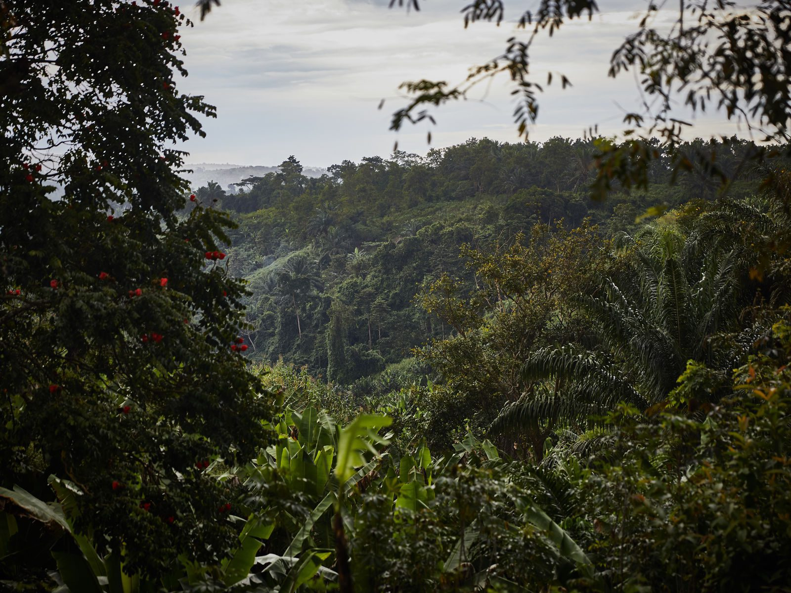

01 / KLÍMA
Segítenek szabályozni az éghajlatot
Az erdők szenet tárolnak, és a párologtatás révén a helyi és regionális vízkörforgásra is hatnak.
A természet egyik legnagyobb kincse
Lépj be a trópusi esőerdők világába, ismerd meg lakóikat, és fedezd fel, mit tehetünk a megóvásukért.
Több mint fák
A trópusi esőerdők rendkívül gazdag élőhelyek. Szabályozzák a víz körforgását, hatalmas mennyiségű szenet tárolnak, és növények, állatok, valamint emberi közösségek otthonai.
01 / KLÍMA
Az erdők szenet tárolnak, és a párologtatás révén a helyi és regionális vízkörforgásra is hatnak.
02 / ÉLET
A sűrű lombkoronától az erdő talajáig rengeteg különböző élőlény talál menedéket.
03 / JÖVŐ
Az erdőirtás, az élőhelyek feldarabolódása és a klímaváltozás komoly veszélyt jelent.

Egy összekapcsolt rendszer
A lehulló levelek táplálják a talajt, a rovarok beporoznak, a madarak magokat terjesztenek. Az ökoszisztéma egyensúlya sok, egymással összefüggő folyamaton múlik.
Tudd meg, hogyan segíthetsz